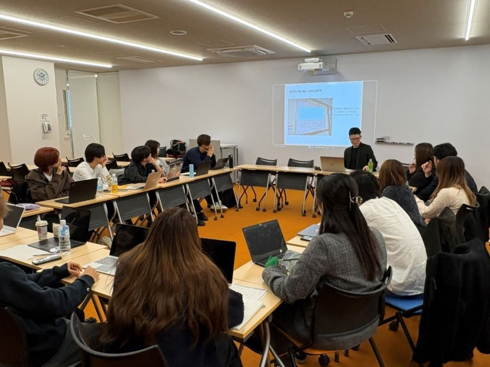
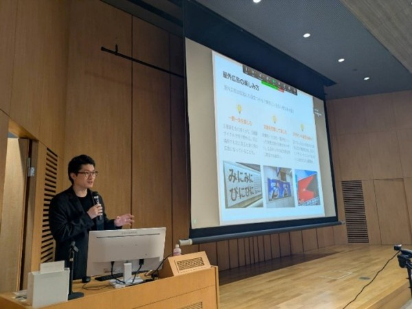

ad:tech tokyo 2026
モデレーター｜リアルメディア最前線2026
街の広告から、広告の仕事のおもしろさを知る
2020年から続ける現地調査「広告巡礼」で集めた実例をもとに、広告の読み解き方を紹介。OOH（屋外広告・交通広告）の基本とトレンドを、たくさんの事例を使ってお伝えします。世の中の広告を俯瞰して、企画力と仕事への意欲を高める研修です。
研修について相談する


実務を覚える前に、
広告っておもしろいと
思ってもらうこと。
配属後は目の前の業務で精いっぱいになりがち。だからこそ最初に、世の中の広告を広く見渡す時間をつくります。
街の広告の見方がわかる
どこに注目して街の広告を見ればいいのか。事例を見るときに持っておきたい視点を身につけます。
最新のトレンドがわかる
業種や媒体を横断して事例を見続けている講師の目線で、いま広告で何が起きているかをつかみます。
企画力とやる気が高まる
「自分ならどう提案するか」を考えるきっかけと、仕事に取り組む楽しさを持ち帰れます。
研修のあとも、ずっと役立つ
見方を知っていれば、毎日の通勤や移動がそのまま学びの時間に変わります。社会人生活が続く中で、自分の中に事例のストックが増えていき、企画のアイデアも着想しやすくなります。
講義
街の歩き方
6年以上、街の広告を見続けてきた視点から、事例の見方や、どんなポイントに注目してウォッチするといいのかを解説します。3名など少人数で、一緒に街を見て回る「広告巡礼研修」も承っています。
講義
事例で見るトレンド
話題の広告をたくさんの事例で紹介し、なぜ話題になったのか、企画の考え方まで読み解きます。
交流・質疑
これからの提案に向けて
気になった事例や、広告の仕事への疑問をなんでも聞いてください。
OOHを扱っている会社の新人にもおすすめです
講師が街を歩いて自分で撮影した事例を次々に紹介。社外講師に依頼いただくことで、普段出会わない広告事例に触れるチャンスも増え、企画のアイデアが広がります。
※講義60分と交流・質疑60分の、計2時間を基本にしています。事前ヒアリングで内容を調整します。
※配属後の担当者やチーム向けには、企業向け研修メニューもご用意しています。

講師
「広告巡礼」が日課の、屋外広告ウォッチャー。
食品メーカーの営業職を経て、2019年に株式会社ビズパへ入社。執行役員として、OOHを中心としたオフライン広告の企画・媒体選定・バイイングと、広告情報メディア「アドクロ」の企画・運営に携わる。2020年から都内を中心にOOHを見て回る「広告巡礼」を継続。すべての事例を現地で見ることを徹底し、X（@adbrex_）で日々発信している（フォロワー24,000人超）。企業の社内勉強会や大学のゲスト講義など、登壇・出演・寄稿は80件以上。
01
お問い合わせ
フォームからご連絡ください
02
事前ヒアリング
30分・無料。研修の目的や参加者の様子を伺います
03
研修当日
2時間。対面推奨（オンライン可）
04
事後フォロー
1週間、メールでご質問を受け付けます
人数と実施形式に応じてご案内します。お気軽にお問い合わせください。
はい。内定者向けには、広告の仕事のおもしろさが伝わる内容を中心に組み立てます。
はい。事業会社の宣伝・マーケティング部門に配属される方にもおすすめです。事前ヒアリングで内容を調整します。
30名までを目安にしています。それ以上の場合はご相談ください。
対応しています。質疑が活発になるので、対面をおすすめしています。
東京23区内は無料です。23区外は別途ご相談ください。全国どこでも伺います。
送信しました
お問い合わせありがとうございます。
24時間以内（土日祝除く）に返信いたします。